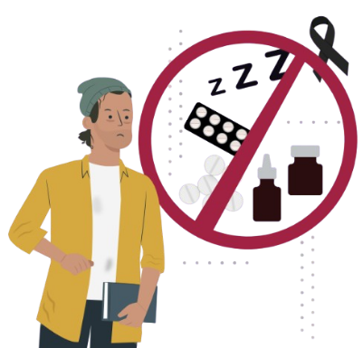

Benzodiacepinas
¡No son un juego!
Propósito
Concientizar sobre los peligros del uso indebido de benzodiacepinas, su potencial adictivo y los riesgos para la salud física y mental
cuando se consumen sin supervisión médica o en combinación con otras sustancias.
¿Qué son?
Las benzodiacepinas son fármacos depresores del sistema nervioso central, recetados para tratar ansiedad, insomnio, convulsiones y otros trastornos.
Actúan disminuyendo la actividad cerebral, produciendo relajación, somnolencia y una sensación de calma.
Aunque útiles en tratamientos médicos, su uso inadecuado o prolongado puede causar dependencia, tolerancia y graves daños neurológicos.
Algunos nombres comerciales comunes son: Valium (diazepam), Lexotan (bromazepam), Trankimazin o Xanax (alprazolam),
Rivotril (clonazepam) y Ativan (lorazepam).
Estas sustancias deben usarse solo bajo receta y supervisión médica.
Formas de consumo
- Oral: En tabletas o cápsulas recetadas, para tratar trastornos médicos específicos.
- Combinada: Cuando se mezclan con alcohol u otras drogas, los efectos depresores se potencian peligrosamente.
- Abuso recreativo: El uso sin receta o en dosis mayores a las indicadas provoca adicción y daños cerebrales.
Efectos durante su consumo
- Sensación de relajación o tranquilidad.
- Somnolencia, lentitud y pérdida de concentración.
- Disminución del reflejo y la coordinación.
- Dificultad para hablar o pensar con claridad.
- Desorientación y falta de memoria a corto plazo.
Efectos después del consumo
El consumo prolongado produce dependencia física y psicológica.
Al suspenderlas bruscamente, pueden aparecer síntomas de abstinencia como ansiedad extrema, insomnio, temblores, convulsiones, depresión o incluso alucinaciones.
Además, el abuso deteriora la memoria y las funciones cognitivas.
Principales daños irreversibles a la salud
- Deterioro de la memoria y la capacidad de aprendizaje.
- Trastornos del sueño y ansiedad crónica.
- Depresión y riesgo de intentos suicidas.
- Problemas respiratorios y daño hepático.
- Coma o muerte al combinarlas con alcohol u otros depresores.

Ten presente:
- Las benzodiacepinas deben usarse solo bajo prescripción médica.
- El abuso o la automedicación puede causar adicción y daños cerebrales irreversibles.
- Mezclarlas con alcohol u otras drogas puede ser mortal.
Mitos y realidades
- Mito: “Si las receta el médico, no hacen daño.”
Realidad: Incluso con receta, un uso prolongado sin control médico genera dependencia y daños neurológicos.
- Mito: “Ayudan a dormir mejor siempre.”
Realidad: Al principio inducen sueño, pero después alteran el ciclo natural del descanso y pueden provocar insomnio crónico.
- Mito: “Puedo dejar de tomarlas cuando quiera.”
Realidad: Su suspensión abrupta causa síndrome de abstinencia severo; deben dejarse gradualmente bajo supervisión médica.
- Mito: “No pasa nada si las mezclo con alcohol.”
Realidad: La combinación puede suprimir la respiración y causar la muerte.